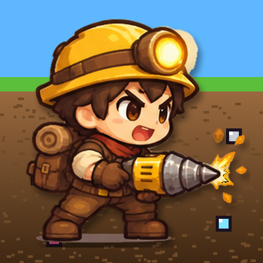
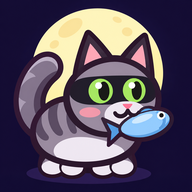
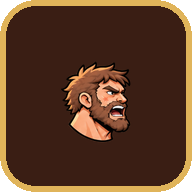

Prototype
만들고 있는 게임 시험판 — 휴대폰 브라우저에서 바로 해 보세요

미니 던전 디거
땅을 파고 내려가 광물을 모으고, 장비를 강화하고, 5개 지역의 보스를 쓰러뜨리는 채굴 탐험 게임
플레이

몰래냥
집사·경비견·감시 카메라의 눈을 피해 생선을 훔쳐 오는 잠입 퍼즐 게임 (99스테이지)
플레이
물감 블록
빨강·노랑·파랑 블록을 겹쳐 색을 섞고, 완성 그림과 똑같이 칠하는 두뇌 퍼즐 (60스테이지 + 오늘의 그림)
플레이
원작이 시작되기 전에
처형될 운명의 악녀 공녀를 가정교사가 되어 키우는 로맨스 판타지 육성 시뮬레이션 (체험판: 1년차)
플레이

일곱 번째 달
90년대 오락실 감성의 판타지 벨트액션 RPG. 6장 캠페인·갈림길·월석·엔딩 4종, 캠프와 장비 파밍 (M1 준비판: 1장은 진짜 그림, 2~6장은 임시 그림)
플레이
몬순 — 바다의 비단길
826년 바다의 비단길 교역·탐험 RPG. 계절풍을 읽고 해협을 오가며 장사하고, 해적과 싸우고, 가라앉은 스승의 배의 비밀을 쫓자 (프로토타입: 1장 「해협의 주인」)
플레이